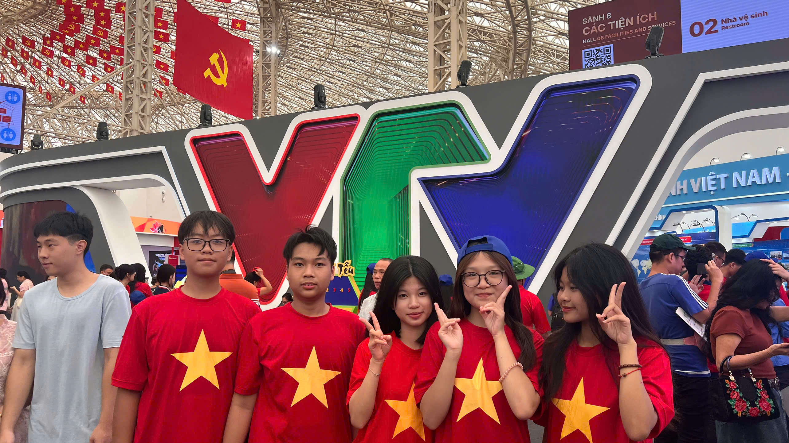
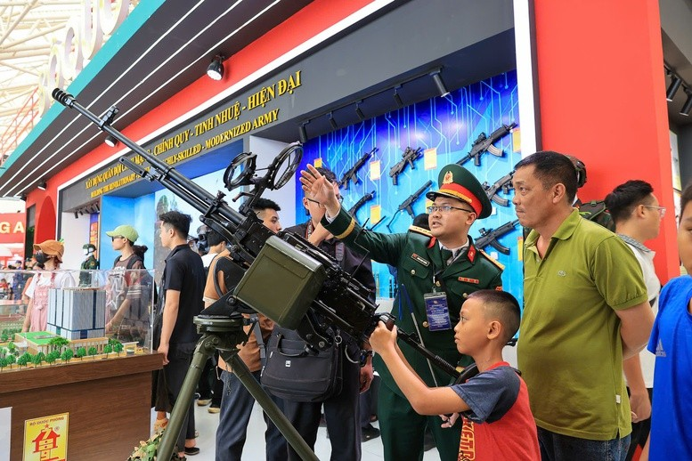
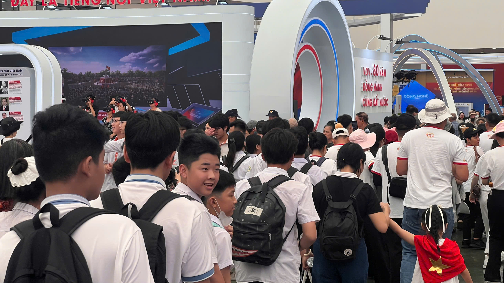

NƠI "KÝ ỨC" VÀ "KHÁT VỌNG" GẶP NHAU
Lịch sử và ký ức
Triển lãm “80 năm hành trình Độc lập – Tự do – Hạnh phúc” tại Trung tâm Hội chợ Triển lãm quốc gia (Đông Anh, Hà Nội) đang bước vào chặng cuối nhưng vẫn chứng kiến dòng người nườm nượp đổ về. Với quy mô lớn nhất từ trước đến nay, triển lãm giới thiệu những dấu mốc và thành tựu to lớn của đất nước trong suốt 80 năm xây dựng và phát triển, trở thành điểm đến đặc biệt để công chúng cùng nhìn lại chặng đường lịch sử hào hùng.

Dự kiến khép lại vào 16h ngày 15/9 với lễ bế mạc tổ chức buổi tối cùng ngày, triển lãm hứa hẹn sẽ lập kỷ lục về lượng khách tham quan. Những ngày cuối không chỉ ghi dấu sự đông đúc kỷ lục mà còn để lại trong lòng công chúng cảm nhận rõ nét về “nơi ký ức và khát vọng gặp nhau” – nơi lịch sử và tương lai cùng hòa nhịp trong một không gian văn hóa đặc biệt.
Từ mọi miền đất nước, người dân đổ về, ai cũng háo hức được chiêm ngưỡng, trải nghiệm và ghi lại những khoảnh khắc đáng nhớ. Niềm xúc động xen lẫn niềm kiêu hãnh hiện rõ trên từng gương mặt, tạo nên một bức tranh sống động về tinh thần đoàn kết, khát vọng và niềm tin vào tương lai. Đây không chỉ là một sự kiện văn hóa – chính trị trọng đại, mà còn là dịp để mỗi người dân được hòa mình vào dòng chảy lịch sử, cảm nhận sâu sắc hơn về những thành tựu to lớn của dân tộc.

Điểm nhấn đặc biệt trong những ngày cuối triển lãm chính là sự hiện diện đông đảo của thế hệ trẻ Việt Nam, từ học sinh các cấp, đến sinh viên. Các bạn không chỉ đến để tham quan mà còn để học hỏi, tìm hiểu về lịch sử, văn hóa và sự phát triển của đất nước. Điểm nhấn đặc biệt trong những ngày cuối triển lãm chính là sự hiện diện đông đảo của thế hệ trẻ Việt Nam, từ học sinh các cấp, đến sinh viên. Các bạn không chỉ đến để tham quan mà còn để học hỏi, tìm hiểu về lịch sử, văn hóa và sự phát triển của đất nước.
“Chúng em thấy lịch sử gần gũi hơn” - cảm nhận từ nhóm học sinh trung học
Một nhóm học sinh lớp 10 đến từ Trường THPT Trần Nguyên Hãn (Hải Phòng) cũng bày tỏ nhiều cảm xúc khi được tham quan triển lãm. Các em ríu rít trò chuyện, thỉnh thoảng dừng lại lâu hơn ở những gian trưng bày sản phẩm của các vùng miền, hay góc tái hiện của VOV, VTV.
PV: Các bạn cảm nhận như thế nào khi tham quan triển lãm lần này?
Em cảm thấy rất phấn khích và tự hào khi được ngắm nhìn chặng đường phát triển của toàn dân tộc trong suốt 80 năm qua. Đây không chỉ là một chuyến đi thực tế mà đối với em nói riêng cũng như các bạn nói chung, đây là một bài học nhắc nhở chúng em - thế hệ tương lai của đất nước thêm yêu và tôn trọng những giá trị quý báu mà thế hệ đi trước để lại.
PV: Gian trưng bày nào khiến các bạn ấn tượng nhất?
Em thích nhất là góc trưng bày ngoài trời có chủ đề “Thanh gươm và lá chắn”. Đó là nơi trưng bày vũ khí, trang bị kỹ thuật tiêu biểu do Tổng cục Công nghiệp Quốc phòng Việt Nam nghiên cứu chế tạo và các vũ khí, trang bị kỹ thuật có trong biên chế của Quân đội. Trong đó nổi bật nhất là thiết kế vòng xuyến trung tâm mô phỏng Cột cờ Hà Nội, hay còn gọi là Kỳ Đài, xung quanh chính là không gian trưng bày vũ khí, trang thiết bị kỹ thuật tiêu biểu.
PV: Thông điệp gì mà bạn muốn gửi tới các bạn cùng trang lứa?
Em muốn nhắn rằng: Lịch sử là của dân tộc, nhưng trách nhiệm viết tiếp lịch sử ấy thuộc về thế hệ trẻ hôm nay. Ngắm nhìn chặng đường đi lên dựng nước và giữ nước của toàn dân tộc, ta càng phải biết có trách nhiệm gìn giữ và bảo vệ thành quả mà cha ông ta để lại. Chúng ta phải yêu nước bằng hành động cụ thể, từ việc học tập, rèn luyện bản thân đến việc tích cực tham gia các hoạt động cộng đồng.

PV: Sau buổi tham quan, các bạn có những dự định gì cho tương lai?
Chúng em muốn rèn luyện, học tập thật tốt để thi và được học tập trong ngành Quân đội, đóng góp sức lực gìn giữ an ninh và bảo vệ Tổ quốc.
Các em cũng như bao bạn học sinh khác khi đặt chân đến triển lãm, được tận mắt ngắm nhìn chặng đường phát triển của dân tộc đều có mong muốn được góp sức mình vào công cuộc xây dựng và bảo vệ Tổ quốc.
Triển lãm là lời động viên tới các bạn trẻ tiến tới "khát vọng"

Trong số những gương mặt trẻ góp phần làm nên bầu không khí sôi động tại triển lãm, có rất nhiều các bạn sinh viên đến từ các trường đại học khác nhau. Giữa dòng người tấp nập, sự xuất hiện của họ mang đến tinh thần học hỏi và trách nhiệm của thế hệ trẻ trước lịch sử dân tộc. Trong đó, bạn Huyền – sinh viên năm 4 Học viện Báo chí và Tuyên truyền (AJC) – đã chia sẻ những cảm xúc rất đặc biệt khi lần đầu được trực tiếp tham gia một sự kiện chính trị - văn hóa có quy mô lớn như thế này.
PV: Ấn tượng đầu tiên của bạn khi đặt chân đến triển lãm là gì?
Ấn tượng đầu tiên của em khi đặt chân đến Trung tâm Hội chợ Triển lãm Quốc gia VEC là sự choáng ngợp trước không gian rộng lớn, hiện đại và mang tầm vóc quốc tế. Kiến trúc mái vòm Kim Quy độc đáo tạo cảm giác vừa gần gũi với văn hóa dân tộc, vừa thể hiện tầm nhìn mở ra tương lai. Không khí sôi động, quy mô trưng bày hoành tráng cùng lượng khách tham quan đông đảo đã khiến em cảm nhận rõ rệt sự trang trọng và ý nghĩa đặc biệt của triển lãm lần này.
PV: Gian trưng bày mà bạn cảm thấy thích nhất?
Trong số nhiều khu vực của triển lãm, nơi khiến em ấn tượng nhất là khu trưng bày khí tài quân sự. Những hiện vật, mô hình và trang thiết bị quân sự được giới thiệu tại đây không chỉ thể hiện sự phát triển vượt bậc của nền công nghiệp quốc phòng Việt Nam mà còn gợi lên niềm tự hào về sức mạnh bảo vệ Tổ quốc. Đứng trước những khí tài hiện đại, em cảm nhận rõ sự vững vàng, bản lĩnh và tinh thần sáng tạo của các lực lượng quân đội, qua đó càng thêm tin tưởng vào khả năng giữ gìn độc lập, chủ quyền đất nước trong bối cảnh hội nhập và phát triển.
PV: Sau khi tham gia triển lãm, thông điệp lớn nhất mà bạn nhận được là gì?
Sau khi tham quan triển lãm, em nhận được thông điệp sâu sắc về lòng yêu nước, tinh thần đoàn kết và khát vọng vươn lên của dân tộc Việt Nam. Triển lãm không chỉ là nơi trưng bày hiện vật hay hình ảnh, mà còn là lời nhắc nhở mỗi người trẻ chúng em về vai trò, trách nhiệm đối với đất nước. Em nhận ra rằng, mỗi bước tiến hôm nay đều được xây dựng từ quá khứ hào hùng, và thế hệ trẻ cần tiếp nối để viết tiếp những trang sử mới.Huyền cũng như những bạn trẻ khác khi đặt chân tới triển lãm A80 đều nhìn nhận được quá khứ hào hùng của cha anh, thấu hiểu được những ký ức đau buồn nhưng đầy hy vọng của thế hệ trước. Để từ đây, các bạn cùng vững chắc tinh thần hơn để tiến tới “khát vọng” của mình.

Triển lãm là lời "nhắc nhở từ quá khứ"
Buổi trò chuyện khép lại nhưng dư âm vẫn còn đọng mãi. Những cảm xúc từ sinh viên, học sinh là thế hệ sẽ tiếp nối cha anh như một minh chứng rằng triển lãm “80 năm hành trình Độc lập – Tự do – Hạnh phúc” đã hoàn thành sứ mệnh: không chỉ lưu giữ ký ức lịch sử, mà còn gieo vào lòng người trẻ tinh thần trách nhiệm và khát vọng dựng xây đất nước. Triển lãm vì thế không chỉ là nơi trưng bày, mà còn là “lời nhắc nhở” rằng 80 năm qua, dân tộc đã viết nên những trang sử hào hùng, bất khuất. Và trong 80 năm tới, trách nhiệm viết tiếp những trang sử mới đang nằm trong tay thế hệ hôm nay.
